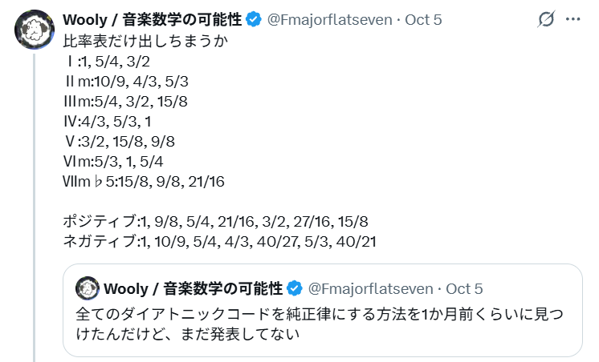

Woolyのホームページ
陰陽の調律法下方倍音列と倍音列による平行世界と、
全ダイアトニックの純正律化のアイデア
どうもWoolyです。
前にXで全ダイアトニックコードを純正律化する方法を発見したぞ！とポストしてからほったらかしになってしまっていたのでちゃんと解説したいと思っていました。
今回はその調律法についての記事になります。

奇数倍音の復習
前前回の記事(長調性と短調性の探求①)では人間の聴覚におけるオクターブ等価性（オクターブ間隔にある音に同質のものを感じる感覚）を考慮すると、音高を無視した音の種類=音名について独立なものは奇数の倍音しかない、という話をしました(奇数ハーモニクス定理)。これは単純な計算で分かることで、オクターブは周波数の2倍なので、
| オクターブ | 奇数 → | ||||||||
|---|---|---|---|---|---|---|---|---|---|
| 1 | 3 | 5 | 7 | 9 | 11 | 13 | 15 | ||
| ↑×2ずつ上がる | +4×16 | ||||||||
| +3×8 | |||||||||
| +2×4 | |||||||||
| +1×2 | |||||||||
| 基準×1 | |||||||||
この図の縦の列に並んでいる”音”は、オクターブ関係なので同じ音名だとみなすことができることになりますが、
| オクターブ | 奇数 → | ||||||||
|---|---|---|---|---|---|---|---|---|---|
| 1 | 3 | 5 | 7 | 9 | 11 | 13 | 15 | ||
| ↑×2ずつ上がる | +4×16 | ||||||||
| +3×8 | |||||||||
| +2×4 | |||||||||
| +1×2 | |||||||||
| 基準×1 | |||||||||
このように、倍音は整数1, 2, 3,…ですが同じ音名を繰り返し辿る部分があって音名としては冗長なわけです。それで奇数の倍音を基本にして音名の種類を考えることにした。奇数は音名の元素、と言ってもいいです。
しかし私は前前回の記事で少し言い忘れていたというか、言い方が悪かったと思うのですが指摘し忘れていた間違えやすい点があったのでここで付け加えておきたいと思います。
この音名の元素、奇数が独立という話ですが、あくまで1つの基本周波数または基本音名を決めた世界の視点で、という話になります。
それはつまり、倍音の”1”は、1Hzを取るわけではないので。実際には基本周波数についての, , , , …がの倍音列だと思います。
少し説明が難しいですね。”倍音文脈”とでも呼びましょうか。それは何か1つの基本周波数を定めたときに決まるものだと思ってください。基本周波数の倍音文脈世界においては、奇数項, , , , ,…は音名として独立であると。私はそういう考え方をしています。
一つの基本周波数に依存しない周波数音高全体の中で音名として独立な部分を取るのであれば、わざわざ倍音列の奇数項を選ばなくても、2倍を法としたオクターブ同値類を取ればいいです。それは前前回の記事で紹介した通り、数学的には
と2の対数において1の差を無視した部分(=小数部分)を取ることです。これは円環になります。
円環といっても、実際の音では音高は無視できません。しかし音名的な属性はある。それで実際の音の幾何的なモデルを考えるなららせんです。これは一般の音楽心理学等でも議論されている内容ではあります。
ドラッグ／矢印キーで視点を回転
Harmonics Majorに含まれる純正律コード
私の記事を初めて読む方もいらっしゃるかもしれないと思ったので、奇数倍音の復習をしました。もう一つ、私が考えているメジャースケールの純正律の音律があって、それがHarmonics Majorです。
倍音文脈、特に倍音列の文脈においては、音名の中で独立な部分は奇数である。それで、倍音列の奇数のみからメジャースケールを構成しました。それがHarmonics Majorです。番号は
比率や和音にマウスを重ねている間、音が鳴り続けます。音が出ない場合やタッチ操作ではクリック／タップしてください。音量と全停止は右上にあります。
です。飛び飛びで一見変な並びですが
は”1からの連続奇数倍音”で、
は
なのでこっちが”3からの連続奇数倍音”です。全体としては1の奇数倍音列ですが、その中に番号の飛びがない部分奇数倍音列として3からのものが入っている。こういう入れ子構造です。
この番号を1オクターブ内に収めると
並びは昇順に替えました。音を順番に鳴らしてみてください。メジャースケールに聞こえませんか？平均律のものとの差は以下の通りです。
| 音律 | 1 C | 2 D | 3 E | 4 F | 5 G | 6 A | 7 B |
|---|---|---|---|---|---|---|---|
| 12平均律 | |||||||
| 従来の純正律 | |||||||
| 平均律との差（cent） | +0.0 | +3.9 | -13.7 | -2.0 | +2.0 | -15.6 | -11.7 |
| Harmonics Major | |||||||
| 平均律との差（cent） | +0.0 | +3.9 | -13.7 | -29.2 | +2.0 | +5.9 | -11.7 |
特にFが平均律とズレていますが、これはFをGの第7倍音に取ったことによる影響です。しかし響きが良いのと、結合音・差音の文脈からして属七の和音(ドミナントセブンス)を取るときにソシレファを鳴らしますが、それの根音をソと知覚しやすいのはこのファ(F)なので、これを採用しています。
このHarmonics Majorには2種類の和音しかありません。いや、何を和音の”種類”の定義と見なすかによりますが、倍音列の項を埋めることを和音の生成の原理とするならば、この音律には2つの種類の和音の分け方がある。この言い方が正確でしょうか。1つ目の和音がⅠ(スケール1番目の音のメジャーコード)です。
そしてもう1つの和音がⅤの和音・・・これは普通はⅤ7まででしょうが、倍音の9までは取れます。
ソシレファラ～♪ このボイシングが私のお気に入りです。”ラ”ってソと調和できるんですね。
今のは倍音列で見た場合の和音の分類ですが、もちろん部分的に音を選んで音を重ねることでほかの和音を作ることも全然OKです。Harmonics Majorは普通の純正律とは違うので、変わった響きのものも作れるのではないでしょうか。
あ、ここで重要な視点がまだあります。通常の音楽理論の三音和音でいうなら
つまり(Cメジャーなら)Emですね、このマイナーコードも短調三音和音の歴史的な比率
根音を1に
整数比
下方倍音の音名
下方倍音列の比
※10:12:15では10が通常の音楽理論でいう根音であるのに対し、右の2つの表現ではが根音または、が根音である
と一致するものになります。Harmonics Majorの音名としては奇数倍音では
ですね。5で割れば
オクターブ同値と並び替えで
と一致します（）。
Harmonics Majorには純正律のマイナーコードも含まれているわけです。なんだか面白くなってきましたね？
下方倍音列について
音楽理論では下方倍音列と呼ばれていますが、倍音列が周波数の整数倍
…
であるのに対して、下方倍音列は
…
と、整数の逆数倍の系列のことです。
よく下方倍音列の理論に対して
という批判があるようですがこれは恐らく論点がズレているのだとおもいます。そもそも倍音列を音楽理論で考える理由ですら、「楽器の音に倍音が含まれているから」に限る必要はありません。下方倍音列も同じです。倍音列・下方倍音列を私は「音が波でできていることによって重要視されるべきものとなる性質、周波数同士の関係」についてのものだと考えています。倍音を含まない正弦波でも純正律の和音関係は成り立つのです。それは実は人間の耳の中における振動が非線形で、結合音や差音、自己項による”倍音”が、純音の入力でも生じてしまうという現象と深く関係していると思われるのですが、今回は深入りはしません。
脱線しました。下方倍音列についてですが、倍音列における最初の奇数3項が
倍音列の最初の奇数3項
オクターブ移動
・並べ替え
・並べ替え
メジャーコード
とメジャーコードに対応しているように、下方倍音列における最初の奇数3項は
下方倍音列の最初の奇数3項
÷
根音を1に
オクターブ移動
・並べ替え
・並べ替え
マイナーコード
という風に、の位置が音楽理論で言う根音になるという違いはあるのですが、しっかりマイナーコードに対応します。
これは驚くべき対称性で、普通の音楽理論では
「マイナーコードはメジャーコードの長３度を少し下げたもの」
「マイナーコードが悲しい理由は、メジャーコードの調和が崩れた姿だからである」
こういう風に言われます。こういう表現も間違ってはいないとは思いますが私はもっとこの下方倍音列から導出できるという性質に注目してもいいんじゃないかな？と思っています（それを支持している人は私以外にもいらっしゃるのではないかと思いますが）。
Harmonics Majorに現れたⅢmは、”15”を起点とした下方倍音列に対応します。
Harmonics MajorのⅢm
÷
15を基準にした下方倍音列
こういう風になっている。
さらに話を進めましょう。
全ダイアトニックコードを純正律化する方法
話も長くなってきたので、もう全ダイアトニック純正律化の答えに進んでしまいたいと思います。
ただ一つ注意しておくと、これは
「従来の純正律が見逃していた、1つの調律で全ダイアトニックコードを純正律化する完全な方法を発見した」
というものではなくて、音律を2つ使います。いや、実質的には1つなのですが、2つのバージョンが存在します。もとになる方の音律を陽の音律、陽の音律から生成するもう片方の音律を陰の音律と呼んでいます。響きが格好いいからこの呼び方を使っているのもありますが、陽は英語でいうポジティブ(Positive), 陰はネガティブ(Negative)を意図しています。そして、この音律の作り方は実際に巷で流行っている”ネガティブハーモニー”と、ある意味同じことをしています。
さて、陽の音律をHarmonics Majorに取ります。奇数倍音音名では
でした。これの逆数バージョンを取ります。
一種の下方倍音列です（Harmonics Majorと同じく、番号は飛び飛びで、部分的には1からのものとからのものが連続です）。
これは1オクターブに収めるとこんな響きです
すでに短調っぽいと思います。ですがここでさらに、この逆数系列の全体を5倍します。それは、Harmonics Majorにおける奇数倍音音名”5”の下方倍音列としてこれを取るという意味でもあります。すると
です。これを今回の陰の音律とします。陽の調律・陰の音律はこの表現のみを規定とするものではないです、一般には陽の調律としたものについての逆数系列を取って、それを必要に応じて任意の移調(なんとか倍)をしたものを陰の音律と呼ぶ・・・というくらいでいいです。ここでは厳密な定義はしていません。
ここからが面白いんです。5倍の陰の音律を1オクターブ内に収めると
陽の音律と比較すると、次の表のようになっています。
| 音律 | 1 C | 2 D | 3 E | 4 F | 5 G | 6 A | 7 B |
|---|---|---|---|---|---|---|---|
| 陽 | |||||||
| 陰（5倍） | |||||||
| 陽 − 陰（cent） | +0.0 | +21.5 | +0.0 | -27.3 | +21.5 | +21.5 | -27.3 |
そう、この陽の音律と陰の音律は非常に接近するのです。それでどちらもかなり同じメジャースケールのように聞こえます。メジャースケールが2つあるのです。
より自然な形でとらえるなら、陰のメジャースケールは陽のメジャースケールの平行調と考えるといいと思います。
これがアイデアの核です。
そして、思い出してください。Harmonics Majorには、3つの三音和音が含まれていました。それは
です。陰の音律にもこれらが変換されて3つの三音和音が含まれているのです。そしてそれらが何と、
の位置にあります。
残りのダイアトニックⅦm♭5は、陽の音律側の15, 9, 21を取ればいいと思います（これはm♭5を5:6:7で取る理論と一致する音程です。単にⅤ7の根音が抜けた形です。）これで、全ダイアトニックコードが揃いました。
| コード | 音律 | 根音の奇数部分 | 根音の比 | 第1音 | 第3音 | 第5音 |
|---|---|---|---|---|---|---|
| Ⅰ | 陽 | |||||
| Ⅱm | 陰 | |||||
| Ⅲm | 陽 | |||||
| Ⅳ | 陰 | |||||
| Ⅴ | 陽 | |||||
| Ⅵm | 陰 | |||||
| Ⅶm♭5 | 陽 |
根音の比は音律全体の基準に対する比、第1・3・5音は各コードの根音に対する比です。Ⅶm♭5は本文の5:6:7に対応します。
根音の並び自体を音階として捉えると、これは従来の純正律のレをからに変更したものになっていますね。
整理と余談
私が発見した全ダイアトニックコードの純正律を取る方法は、こういうものです。ただし注意したようにこの方法だと、メジャースケールの音が場合によって２つ存在することがあるわけです。ただ特に、5倍したので、Harmonics Majorにおける3番目の音(ミ)は1つしかありません。ドとミ(1と5)は固定された音になっています。
その2つの”固定点”がこの陰陽の調律法における”音感の根っこ”だと私は考えています。この調律においてはダイアトニックコードを主なものとして様々な和音を演奏することができますが、それらは全体としては必ず
ド=1 の倍音列
または
ミ=5 の下方倍音列
のどちらかに属しています。または両方に属します。
それでドをこの調律における陽極または陽根、そしてミを陰極、陰根と呼んでもいいかもしれません。まあここまでは強制しないです、好きに呼んでください。陽中心とかでもいいし。
ドミ(長3度・・・オクターブ移動を許すのでインターバルで言うと不正確かもしれませんが)は聴覚というか、音感的にも鋭い結合感を感じる強い和音だと思います。それらはこの調律内で不変で、他の音を侍らせながら、調性感を彩るための引力中心となっているわけです。
ところで、今回紹介した陰陽の調律で演奏ができるアプリを作成しました！
というか、前に作った倍音調律きーぼーでぃずむの改造版で、今回紹介した陰陽の調律法の機能が前のバージョンにも実現はされていたのですが、それを利用していただきやすい形に変えています。
PCのキーボードに陰陽の調律の音程を割り当てて、演奏することができるアプリです。初期値ではペンタトニックスケールが横列に並ぶ形で配置されていますが、お好みの形に再配置していただくことができます。和音の同時発音には独立してキーが反応するゲーミングキーボードなどを利用することをお勧めします。
P(数字)が、陽の音律です。ただし、番号はメジャースケールにおける昇順で振ってあります。N(数字)は陰の音律ですが、これもメジャースケールにおける昇順で振ってあります。ただし、O(1)は”1”です。これは陰陽で同じなので同じ記号にしています。
あれ、ミも同じじゃなかったのか、と思ったかもしれません。はい、5倍の陰の音律を取る場合は同じです。ただ、このアプリでは今回の場合の拡張を少し入れているんです。それが余談につながります。
今回は陽の音律の逆数系列を5倍しました。これは倍音列の奇数第３項への移動です。では、例えば3倍や1倍ならどうなるでしょうか。
1倍は少し不完全な、しかしちょっと短調っぽい形になります。(Harmonics Majorの単純な逆数系列と一緒です↑)しかし3倍がすごいんです。詳しい解説は省きますが、ちょうど3倍のときにN1~N7がP1~P7の”同主調”の短調になります。
下方倍音列とマイナーコードの関係を思い出してください。1, , の””が根音でした。これと同じで、今回は3倍しているのでの位置が”1”、つまり陽の音律の”1”、ド、と一致します。それでドミ♭ソの和音を骨格としたスケールになるわけです。
| 音律 | C | D | E♭ | F | G | A♭ | B♭ |
|---|---|---|---|---|---|---|---|
| 平均律マイナースケール | |||||||
| 陰（3倍） | |||||||
| 平均律との差（cent） | +0.0 | +31.2 | +15.6 | -2.0 | +2.0 | +13.7 | -3.9 |
奇数音名の分数で見るとこうなっています。
ところでこの3倍の陰の音律ですが、Ⅴmが純正形ではありません...。これは致命的な欠陥か、と思いきや：
実は、陽の音律側にⅤが居るんです。つまり、カデンツを演奏するなら
Ⅰm → Ⅳm → Ⅴ → Ⅰm
がこの調律では自然です。ハーモニックマイナーですね。
これが短調のドミナントをメジャーにする、シ♭を半音上げる理由か？！！と、失礼しました。そもそもハーモニックマイナーを考えた人はこういう考え方で作ったわけではないでしょうから、音律史的には違うんだと思いますが。
それにしても、この陰陽の調律法には音楽理論の”倍音的な説明”につながるような面白い現象・アイデアがかなり詰まっていて面白いものだと思います。
今回は平行調・ダイアトニック・同主調のアイデアでしたが、考えを広げればもっと面白い結果が出てくるかもしれません。ぜひ皆さんもキーボードを触ったり、または自分で陰陽の調律を採用したアプリを作ってもらったりして、遊んで研究してみてください。
私も研究が進んだらまた報告したいと思います。
Wooly